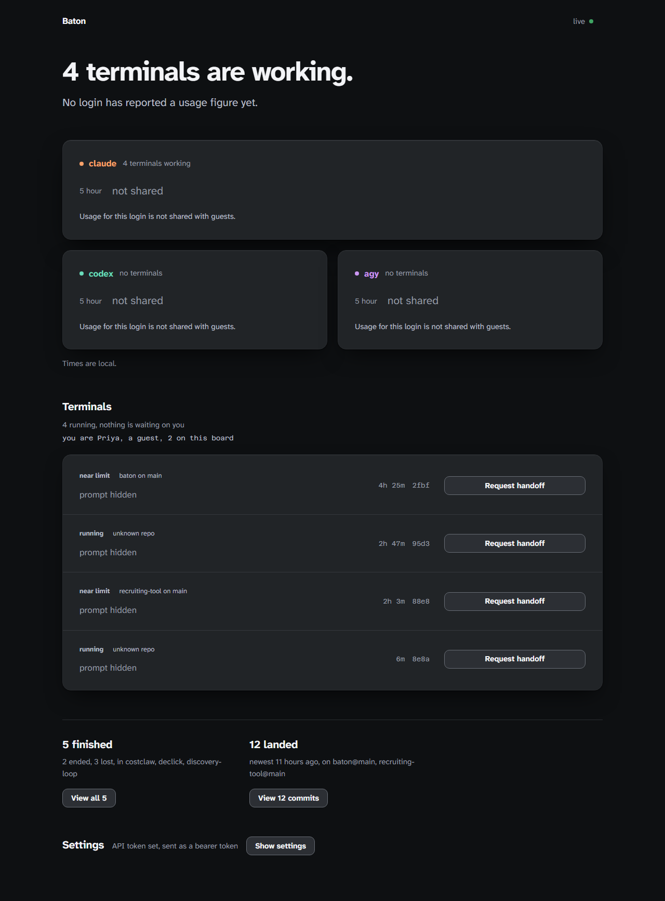

Your agent hits the limit. The next one keeps your place.
Baton runs Claude Code, Codex and agy. It watches the five-hour and weekly windows, and at the wall it saves the session, stops the agent, and starts your next option in the same terminal, from where the last one stopped. Nothing is retyped.
npm install -g baton-agentsThen type baton claude where you would have typed claude. Same session, same flags. The bundle that carries the context across is a second package, installed once: pip install -U context-handoff-bundle.
Node 22 or newer. Zero runtime dependencies. 14-day trial, no card; then $79 once. Binds 127.0.0.1; it never edits your settings files, and the one thing it writes outside your repo is the folder-trust answer each agent CLI would otherwise stop and ask for.
baton claude opens at 127.0.0.1:4747, recreated here: one line for each login, one line for each terminal. The whole board is further down.The handoff, as it happens in the terminal.
A sample session. Every line that begins with [baton] is what Baton prints; the rest is the agent. It plays at reading speed when it scrolls into view.
git diff --stat, dirty files, recent commits, why it stopped.
One word in front of the command you already type.
baton claude --model opus is claude --model opus with Baton alongside. The agent's own prompt and permission flags pass through unchanged. Baton's hooks ride in a separate per-session settings file; your own settings file is never edited.
The first baton <agent> starts the board at http://127.0.0.1:4747 and opens it. Later sessions reuse it.
| command | usage percentages | the wall |
|---|---|---|
| baton claude | Claude Code's own usage endpoint, the same numbers as /usage, polled every 60 seconds | the StopFailure hook with rate_limit |
| baton codex | a read-only account/rateLimits/read through Codex's app-server, polled every 60 seconds; the session rollout file as a fallback | usage_limit_exceeded in the rollout file |
| baton agy | none; agy exposes no percentages | RESOURCE_EXHAUSTED in agy's log |
Each tap was read from the CLI's source or documentation and checked on a real machine on 11 September 2026: Claude Code 2.1.268, codex-cli 0.153.4, agy 1.2.0. Nothing is screen-scraped.
One page that knows what every session is doing.
It opens with one line for every login: the worst reading each has, and nothing else. show windows opens the head, which then stays put while the page scrolls on a wide screen and scrolls with the page on a narrow one, one row per login. Opened, each window gets a graduated track with a post painted at 85 percent, the percentage right-aligned so that on a wide board the ones digit of 4, 45 and 96 lands on the same x, and one word for the reading: under 60, over 60, over 85, stale 2h, at the wall. A window Baton has no reading for paints no bar at all: an empty track and the words no reading. Nothing here prints a number it did not read.
Under it, every Baton session in every terminal is a full-width panel in the same four-column register. A terminal that is running normally is one line: the agent, the short session id, a status word beside a 7px mark, the prompt, the repo and branch, an elapsed clock. Its files, its disclosure and its controls are one hover, or one Details click, away. The moment a terminal needs you it rises one step off the plate and opens to the whole register: one ranked sentence, the rest of the sentences behind a disclosure that names them, the files as plain text, and the row Land, Hand off now, Details, End, always in that order. A button that does not apply is left out, never moved, so a terminal that has stopped reads Land, Details, Remove.
Below: the same head, with show windows pressed.
Times are local.
Every terminal here works in the checkout itself: there is no branch of its own to land
Details click away; the codex row is drawn as it looks with the pointer on it, which is where its four controls come from. A reason that is true of every terminal is printed once for the region, not under each button, which is why neither row repeats it. The words, the register and the button order are the real ones; the repo, the task and the times are illustrative. The board's other two regions, Background tasks and Settings, sit below this crop.A second session gets its own worktree. Nothing merges.
Start baton codex in a checkout where baton claude is already live and the new session gets its own git worktree, .baton-worktrees/<id> on branch baton/<id>, cut from the branch the checkout has out. The terminal prints one line saying where it is.
Work an agent does with no interactive terminal is a background task, and those have their own region on the board, as rows, not columns. The rows are ordered by what needs you: waiting on you first, then failed, then running, then paused, queued, backlog, done. Each runs in its own worktree. Build stops with the changes sitting in that worktree and merges nothing. Build-land and Factory run the tests and merge on their own. You pick the first agent, and the fallback agents under Advanced options are the same handoff order.
A terminal with a worktree has a live Land button: commit what the agent left, rebase onto the base, run the repo's tests, fast-forward the base. When a step fails nothing lands and the panel's one sentence says why: rebase-conflict with the files, tests-red with the end of the output, dirty-trunk when the checkout has local changes the landing would overwrite. Nothing is ever pushed.
also: landed on the first and it reads landed on main, 98f8880, 1 file, +1/-0.Between the warning and the wall, four things happen. You watch them.
85%The fill crosses the post painted at 85, the word beside the numeral turns to over 85, the terminal's status word reads near limit, and the terminal bell rings once. Get to a stopping point, or keep typing.
limitBaton saves the bundle it has been refreshing every two minutes: the task, the last messages, git diff --stat, dirty files, recent commits, and why it stopped.
stopThe agent process is stopped and the terminal is put back the way it was, down to the mouse modes and scroll margins a killed agent leaves behind, so the next agent starts on a clean line under your history. The next option starts in it: another login of the same agent if you added one, otherwise the next agent in your order.
first turnThe new agent reads .baton/RESUME-<session-id>.md, the same text Baton also copies to .baton/RESUME.md, checks git status and git diff, and carries on with the same task.
The order
You set it. Other logins of the same agent come first, then the other agents in the order you saved, each tried once. It is a priority list, not a rotation: put agy at the bottom and agy is the last option from a claude terminal and from a codex terminal alike. Settings, the last region of the board, holds the default that new terminals copy; Change order, inside a terminal's Details, changes that one terminal while it runs. An option whose CLI is missing or whose wall has not reset is skipped.
When every option is out
The terminal prints each option with its reset time, soonest first, then stays open with a countdown to the first reset and starts that agent from the bundle when it arrives. Ctrl-C, or End on its panel, quits instead.
What is written, and what is never touched.
Subscription logins only. Baton is meant to sit beside tools you already trust, so the list of what it does not do is as exact as the list of what it does.
Never edited
~/.claude/settings.json, or any other settings file of yours- agy's own files, apart from its trusted-folders list
- your repo's settings
- Claude Code gets hooks through a per-session
--settingsfile under~/.baton; codex and agy get nothing injected
Written in your repo
.baton/, the session notes andRESUME.md.context-handoffs/, the bundles.baton-worktrees/, a second session's worktree, plus itsbaton/<id>branch- all three added to
.git/info/exclude; landing fast-forwards your branch and nothing is pushed
Written outside your repo, once per folder
- Each agent CLI asks once, the first time it runs in a directory, whether you trust that folder. A handoff fires when the limit hits, which is usually when nobody is watching, so Baton records the same answer you would have given for the repo you typed
baton claudein. claude→~/.claude.json→projects["<repo>"].hasTrustDialogAccepted: truecodex→~/.codex/config.toml→[projects."<repo>"] trust_level = "trusted"agy→~/.gemini/trustedFolders.json→"<repo>": "TRUST_FOLDER"- It never creates one of those files, never rewrites one to say what it already says, and never removes what is in one.
BATON_TRUST=neverswitches all of it off and you answer the prompts yourself.
Scrubbed
- Claude Code's stored login is read for the usage numbers and sent only to
api.anthropic.com; it is never written or printed - the ledger scrubs bearer tokens and key shapes from every line
- the board binds
127.0.0.1;baton share onis the one way to listen elsewhere, with a token per human baton uninstall --yesremoves~/.batonand nothing else
Stripped from every agent's environment
ANTHROPIC_API_KEY, ANTHROPIC_AUTH_TOKEN, ANTHROPIC_BASE_URL, ANTHROPIC_CUSTOM_HEADERS, OPENAI_API_KEY, OPENAI_BASE_URL, OPENAI_API_BASE, GEMINI_API_KEY, GOOGLE_API_KEY, GOOGLE_GEMINI_BASE_URL, GOOGLE_GENAI_USE_VERTEXAI, GOOGLE_GENAI_USE_ENTERPRISE, GOOGLE_CLOUD_PROJECT, GOOGLE_CLOUD_LOCATION, GOOGLE_APPLICATION_CREDENTIALS, CLAUDECODE, CLAUDE_CODE_*, CLAUDE_EFFORT, CLAUDE_PLUGIN_DATA
Nineteen names, removed before any agent starts, because Baton is for subscription logins. The one exception inside CLAUDE_CODE_* is CLAUDE_CODE_PRINT_BG_WAIT_CEILING_MS, which Baton sets to 0 for a detached Claude print session. The list is src/env.mjs line 13.
Fourteen days on trial, then one price for one human.
The trial starts the first time you type baton claude. No card, nothing to sign up for, every feature on. When it ends, Baton stops adding itself and the bare agent keeps working as before.
Personal
$79 once, for one human on any number of machines
- The board, usage tracking, the handoff bundle and the handoff itself
- A worktree per second session, and Land
- Every release for 12 months; the version you have keeps working after that
Team
$12 per seat, per month
- Everything in Personal, for each person on the board
baton share on: the board on Tailscale or your LAN, a token per human- The key renews with the subscription;
baton license refreshfetches it

A key is a signed token checked on your machine with the public key that ships in Baton; the CLI talks to this site only to renew a Team key. After paying you land on a page with the key and it is emailed to you: baton license activate <key>. Prices are before tax; Stripe adds what your country charges. Fourteen-day refund, reply to the receipt.
Two commands to install, then baton claude in any repo.
Node 22 or newer, git, Python 3 with pip, and at least one logged-in agent CLI.
npm install -g baton-agentspip install -U context-handoff-bundlebaton claudeFourteen days on trial from that third line, no card; then $79 once for Personal or $12 per seat per month for Team.
Verified live on 11 September 2026 against Claude Code 2.1.268, codex-cli 0.153.4 and agy 1.2.0. 463 tests. Commercial software; the JavaScript ships readable so every claim on this page can be checked in the package.